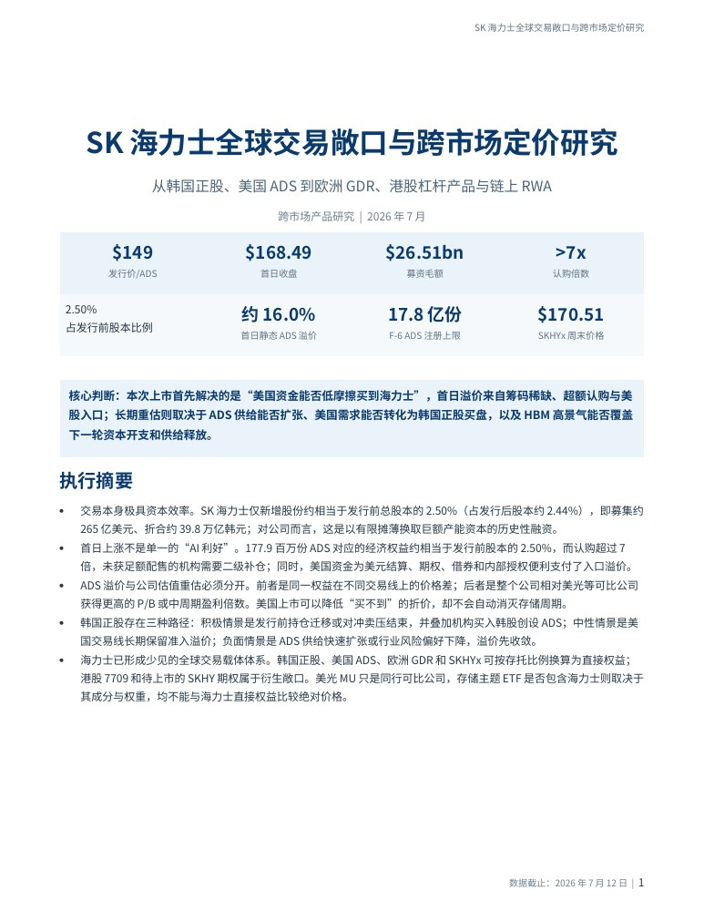
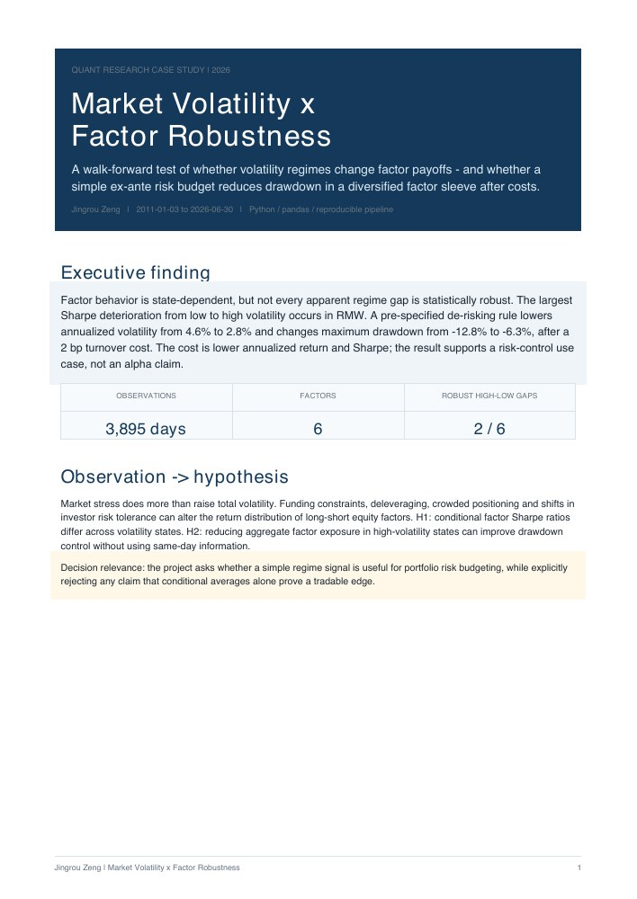
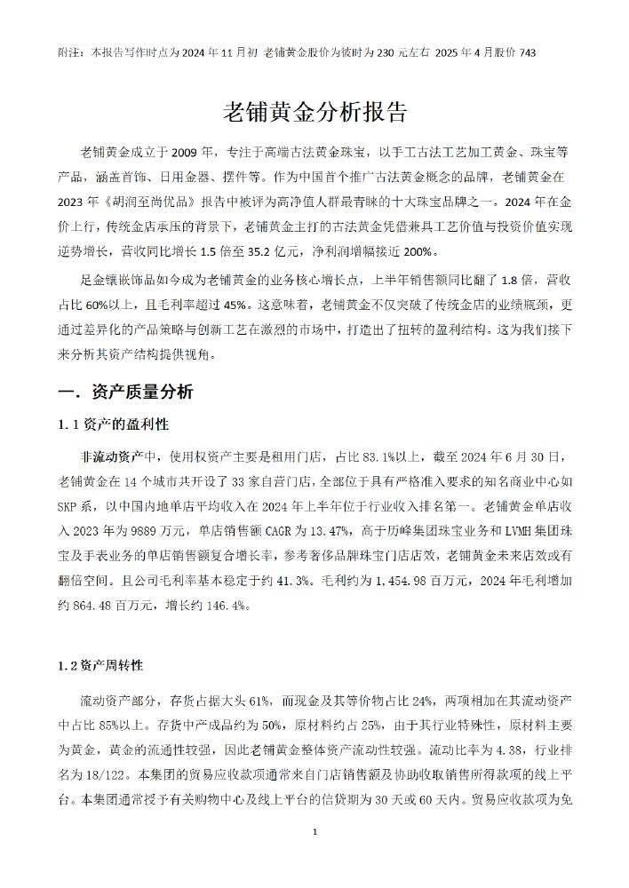
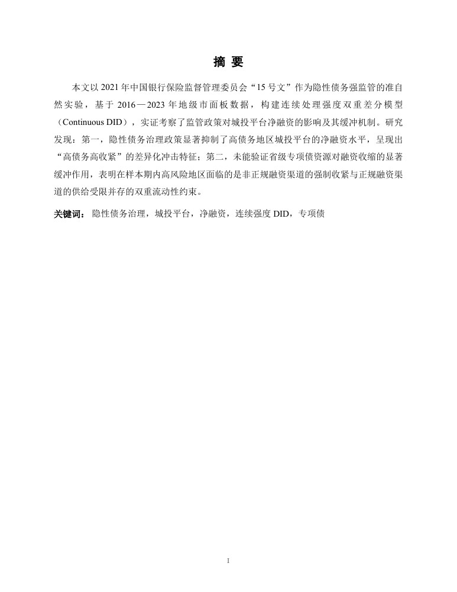
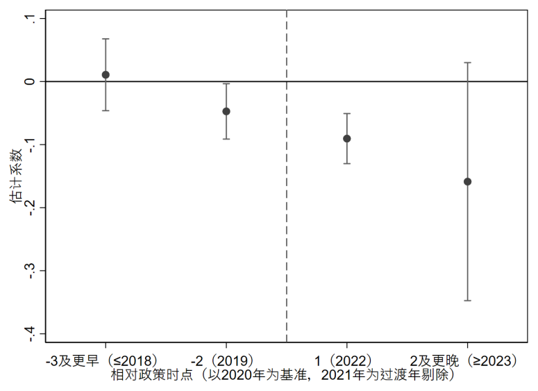

PDF · 15 PAGES跨市场研究Cross-market research
SK 海力士全球交易敞口与跨市场定价研究SK Hynix: Global Exposure & Cross-Market Pricing
韩国正股、存托凭证与衍生敞口之间的权益映射、转换机制与定价摩擦。Equity mapping, conversion mechanisms, and pricing frictions across trading venues.
写作与研究Writing & Research
这里集中展示我的投资研究主线：从行业变化与公司基本面出发，结合市场定价和实证证据，形成可解释、可复盘的判断。
These summaries present the questions, methods, evidence, and conclusions behind my research notes, equity analysis, academic work, and research tooling projects.
报告原文The complete work
在线翻阅完整报告，也可以下载保存。每份文件保留原有研究时点与内容，版本说明见阅读页。Read the full reports online, or download a copy. Each document retains its original research context; version notes appear in the reader.

PDF · 15 PAGES跨市场研究Cross-market research
韩国正股、存托凭证与衍生敞口之间的权益映射、转换机制与定价摩擦。Equity mapping, conversion mechanisms, and pricing frictions across trading venues.

PDF · 6 PAGES量化研究 · 英文报告Quantitative research · English PDF
波动状态、因子表现与风险预算：包含无前视规则、成本与稳健性检验。Volatility regimes, factor payoffs, and risk budgets, with anti-leakage rules and robustness checks.

PDF · 28 PAGES公司研究 · 历史原稿Company research · Original archive
完整合订原稿：老铺黄金的品牌与财务分析，以及航天晨光的业务与行业研究。The original combined file, covering company financials, business structure, and industry context.

PDF · 31 PAGES本科论文 · 公开阅读版Undergraduate thesis · Public reading copy
完整实证研究。公开版移除含学号及签名栏的三页前置材料，保留研究内容。The full empirical study; three administrative front pages were omitted for the public copy.
投资研究Investment Research

跨市场产品研究 · 2026 年 7 月Cross-market product research · July 2026
这份研究从同一底层权益在不同市场的交易方式出发，比较韩国普通股、美国 ADS、欧洲 GDR、港股杠杆产品与链上 RWA。研究重点是区分直接权益、衍生敞口和行业替代品，并理解市场准入、汇率、流动性、转换机制和交易时段如何影响跨市场定价。
This report maps the Korean common share, U.S. ADS, European GDR, Hong Kong 07709, SKHY options, and tokenized SKHYx into one framework, separating direct equity, derivative exposure, and industry proxies.
量化方法论 · 风险管理Quantitative methodology · risk management
这个项目用于解释科技板块上涨过程中的阶段性风险调整依据。框架综合价格与动能、科技链内部广度、期权风险定价和海外科技链确认，观察多维证据是否同步升温，而不是用单一指标或主观盘感决定减仓。
This project converts price and momentum, internal breadth, option risk pricing, and overseas technology-chain confirmation into continuous 0-1 intensities and a composite risk temperature.

主打观点 · 个人投资框架Flagship thesis · personal investment framework
我的存储芯片观点不是从价格动量开始的，而是从 AI 基础设施的问题开始： 如果 GPU 是最显眼的瓶颈，那么训练、推理、本地部署和数据中心扩张会怎样改变 HBM、DRAM 和 NAND 的需求结构？
My memory-chip thesis did not start from price momentum. It started from the question behind AI infrastructure: if GPUs are the visible bottleneck, what happens when training, inference, local deployment, and data centers all require more high-bandwidth and high-capacity memory?
注意到一只 SK Hynix 相关杠杆产品反复大幅波动，开始追问为什么存储公司在更大范围市场接受叙事之前已经先动。
Noticed repeated sharp moves in a leveraged SK Hynix-related product and began studying why memory names were moving before the broader market fully accepted the thesis.
从“DRAM 价格周期”转向“AI 改变需求结构”：HBM 挤占高端 DRAM 产能，推理和本地部署又抬高 NAND 与存储系统需求。
Moved from “DRAM price cycle” to “AI demand changes the structure”: HBM consumes advanced DRAM capacity, while inference and local deployment raise NAND and storage-system demand.
地缘风险导致市场回撤时，我把它视为扰动而不是观点失效，因为供需关系和已锁定的 AI 资本开支并没有同步改变。
During geopolitical risk-off pressure, I treated the selloff as a disturbance rather than a thesis break because supply-demand conditions and locked-in AI capex had not changed.

个股研究Equity research
这份分析关注金价趋势、品牌定位、资产结构、门店效率和估值预期如何共同作用。 其中最有价值的部分，是把宏观贵金属周期和公司自身的品牌溢价联系起来。
This analysis studies how gold-price trends, brand positioning, asset structure, store economics, and valuation expectations interact during an upward gold cycle. The strongest part of the work is the link between macro commodity conditions and company-specific brand premium.
“老铺黄金主打的古法黄金凭借兼具工艺价值与投资价值实现逆势增长……打造出了扭转的盈利结构。”
Traditional handcrafted gold combines artistic and investment value, supporting counter-cyclical growth and a stronger profit structure.
“足金镶嵌饰品如今成为老铺黄金的业务核心增长点，上半年销售额同比翻了 1.8 倍，营收占比 60% 以上，且毛利率超过 45%。”
Pure-gold inlay jewelry became a core growth driver: first-half sales nearly tripled, exceeded 60% of revenue, and carried a gross margin above 45%.
“老铺黄金是以留存资本为主的利润驱动型企业……融资的外部依赖性较低，有效降低企业的财务风险和经营压力。”
The company is primarily profit-funded, with limited dependence on external financing and therefore lower financial and operating pressure.
发现过程How I found it
我关注老铺黄金的契机，不只是因为金价上涨，而是它同时踩中了两个变化： 一是贵金属在债务扩张和货币增发周期中的稀缺性价值，二是黄金饰品从 “保值型消费”向“高附加值奢侈品消费”的转变。
I began studying Lao Pu Gold not simply because gold prices were rising, but because the company sits at the intersection of two shifts: renewed scarcity value for precious metals during debt and monetary expansion, and the move from wealth-preservation jewelry toward higher-value luxury consumption.
传统黄金饰品的核心卖点往往是保值，而老铺黄金更特殊的地方在于，它把 古法工艺、品牌叙事和高端审美结合起来，逐渐走向奢侈品路线。它吸引的 不只是普通黄金消费者，也包括原本会购买 Chanel、Hermes 等高端品牌的 高净值女性客群。这使它和传统金店不一样：它并不只是在卖黄金克重，而是 在卖稀缺性、工艺感和身份认同。
Traditional gold jewelry is usually sold on preservation value. Lao Pu Gold is different: it combines traditional craftsmanship, brand narrative, and high-end aesthetics, attracting customers who might otherwise buy global luxury brands. The product is not merely gold by weight; it also sells scarcity, craftsmanship, and identity.
宏观层面，贵金属锚定的是稀缺性，国家货币锚定的是国家信用或外汇储备。 当全球经济进入较大的债务拉动周期，政府存在更强的货币扩张动机时，贵金属 对普通家庭和中产阶层也会重新具备抗通胀和资产配置意义。老铺黄金正好把 投资属性与高端奢侈品牌属性结合起来，因此进入了我的研究视野。
At the macro level, precious metals are anchored in scarcity, while sovereign currencies depend on state credit and reserves. In a debt-driven cycle with stronger incentives for monetary expansion, gold regains relevance as an inflation hedge and portfolio asset. Lao Pu Gold combines that investment attribute with luxury-brand economics.

指数研究笔记Index research note
这份研究从指数编制与底层资产出发，比较成分行业、权重逻辑、ROE 波动和估值位置， 识别 ETF、LOF 等一篮子产品真正的风险收益来源。
This note is less about a single stock and more about understanding the underlying assets behind index products. By comparing index construction, constituent industries, weighting logic, ROE volatility, and valuation position, I practiced how to analyze a basket product such as an index, ETF, or LOF beyond its surface name.
“自由现金流指数编制方法不同，与中证红利指数在目标、样本选择、调整频率和计算方式上存在显著差异。”
Free-cash-flow and dividend indices differ materially in objective, constituent selection, rebalancing frequency, and weighting methodology.
“自由现金流指数更偏向现金流稳定的成长型公司，而中证红利指数则更注重高股息率的成熟行业公司。”
The free-cash-flow index tilts toward companies with durable cash generation, while the dividend index favors mature industries with high payout yields.
“中证红利和现金流指数稳健盈利的风格接近，但红利偏避险，自由现金流依靠基本面改善。”
Both styles seek resilient earnings, but dividend exposure is more defensive while free-cash-flow performance relies more on fundamental improvement.
| 维度 | 自由现金流指数 | 中证红利指数 |
|---|---|---|
| 编制逻辑 | 剔除金融和房地产行业，采用现金流加权，更强调自由现金流质量。 | 以股息率为核心筛选逻辑，采用市值加权，更强调分红稳定性。 |
| 底层资产 | 偏向现金流稳定、盈利能力较强的公司，如家电、石化、汽车、煤炭等。 | 偏向成熟行业和高分红公司，如银行、煤炭、交运等传统高股息板块。 |
| 风格暴露 | 更依赖基本面改善和盈利修复，经济复苏期弹性更强。 | 更偏防御和收益型配置，经济下行或震荡期稳定性更强。 |
| ROE 特征 | ROE 波动较大，周期性更明显。 | ROE 更平稳，盈利稳定性更强。 |
| 投资含义 | 适合在基本面改善阶段做风格切换，捕捉交易性机会。 | 适合作为偏避险、偏分红、偏成熟行业的底仓型选择。 |
| Dimension | Free Cash Flow Index | CSI Dividend Index |
|---|---|---|
| Construction | Excludes financials and real estate, uses cash-flow weighting, and emphasizes free-cash-flow quality. | Screens primarily on dividend yield, uses market-cap weighting, and emphasizes payout stability. |
| Underlying assets | Tilts toward companies with strong cash generation in appliances, petrochemicals, autos, and coal. | Tilts toward mature, high-dividend sectors such as banks, coal, and transportation. |
| Style exposure | Depends more on earnings recovery and fundamental improvement, with greater upside in expansions. | Offers more defensive and income-oriented exposure, with greater resilience in weak or range-bound markets. |
| ROE profile | More cyclical, with greater ROE variation. | More stable ROE and earnings quality. |
| Investment use | Useful for style rotation when fundamentals are improving and a cyclical opportunity is emerging. | Better suited to a defensive, income-oriented core allocation in mature industries. |
方法笔记Method note
我的投资框架不是选股公式，而是一套理解公司、行业、市场预期和可交易分歧的方法。 它提醒我先找主要矛盾，再看基本面、周期、流动性、估值和催化风险。
My investment framework is not a formula for picking stocks. It is a disciplined way to understand what kind of company or industry I am looking at, what the market is already pricing in, and where a tradeable disagreement may exist.
学术研究Academic Research

因果推断Causal inference
我的本科论文研究 2021 年隐性债务治理政策如何影响城投平台净融资。 我使用 2016-2023 年地级市面板数据，并把政策前债务压力作为连续处理强度。
My undergraduate thesis studies how the 2021 implicit-debt governance policy changed LGFV net financing. I used prefecture-level panel data from 2016 to 2023 and treated pre-policy debt burden as a continuous treatment intensity.